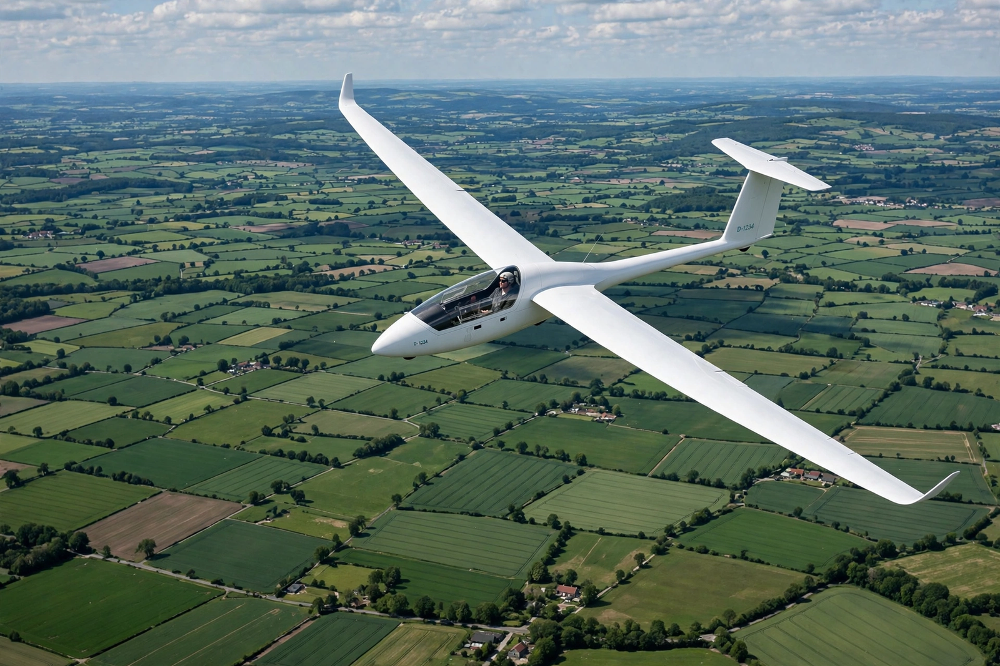

Glider
From Wikipedia, the free encyclopedia

A sailplane in flight.A glider is a fixed-wing aircraft without an engine, sustained in flight by the reaction of air against its lifting surfaces — in soaring flight, pilots climb in rising air (thermals, ridge lift and mountain wave) to stay aloft for hours and travel hundreds of kilometres. Gliding (soaring) is both the historical root of aviation — Lilienthal and the Wrights began with gliders — and a modern sport and training path.
Soaring
Modern sailplanes have aspect ratios above 20 and glide ratios over 40:1 — the best exceed 60:1 — letting pilots cross countries by hopping between thermals. World championship tasks race over 300–500 km courses; distance records exceed 3,000 km in Andean wave lift (Perlan Project also reached over 76,000 ft in wave, a gliding altitude record).
Types and launches
Training two-seaters and high-performance racing singles use aerotow or winch launches. Hang gliders and paragliders are foot-launched gliders; military gliders (Waco, Horsa) delivered troops in the Second World War, notably on D-Day and at Arnhem; the Space Shuttle was, on return, the fastest glider of all.
History
Otto Lilienthal\'s 2,000 controlled glides in the 1890s produced the data that inspired the Wrights. Germany, barred from powered flight after 1918, nurtured gliding at the Wasserkuppe, driving advances in aerodynamics and laminar-flow wings used by all aviation.